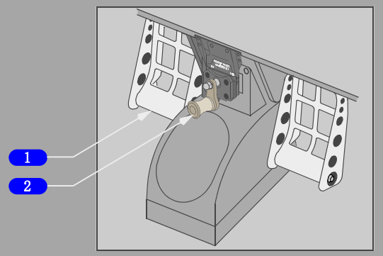

前轮转弯(NOSE WHEEL STEERING)电门
备用（ALT）- B液压系统向前轮转弯供压。
正常（NORM）（护盖盖好） - A液压系统向前轮转弯供压。
1 前轮转弯手轮
旋转 -
• 转动前轮,可向任一方向最大至78度。
• 超控方向舵脚蹬转弯。
2 前轮转弯指示器
左（LEFT）- 表示前轮转弯向中心位置的左侧偏转。
中（CENTER）- 正常直线前进位置。
右（RIGHT）- 表示前轮转弯向中心位置的右侧偏转。

1 方向舵/刹车脚蹬
蹬踏整个踏板 -
转动前轮,可向任一方向偏转最大至7度。
仅蹬踏脚蹬顶部 -
启动机轮刹车。
2 方向舵脚蹬调节(RUDDER PEDAL ADJUSTMENT)摇柄
AFT（逆时针）-
向后调节方向舵脚蹬。
FWD（顺时针）-
向前调节方向舵脚蹬。
方向舵的说明,可点击参阅顶部"方向舵"说明链接
前轮转弯
当前起落架在放下位并且受飞机重量压缩时，前轮转弯可用。
将起落架控制手柄置于放下位将使A系统的液压压力可用于转弯计量活门。
当前轮转弯（NOSE WHEEL STEERING）电门置于备用（ALT）位、B系统油箱中油量正常且飞机在地面时，可以激活备用前轮转弯系统，从而向前轮提供B系统压力。
如果起落架转换组件下游的液压油泄漏导致油箱中B系统液压油减少时，传感器关闭起落架转换活门，备用前轮转弯操纵将失效。
主要的转弯操作通过前轮转弯手轮控制。方向舵脚蹬可提供有限的转弯控制。
前轮转弯手轮部件上的指针表示相对于中立设置的前轮转弯位置。
当前起落架支柱伸出时，方向舵脚蹬的转弯操纵不工作。
拖把杆上装有一个安全销来给前轮转弯释压。这样就可在液压系统不释压的状态下推飞机或拖飞机。